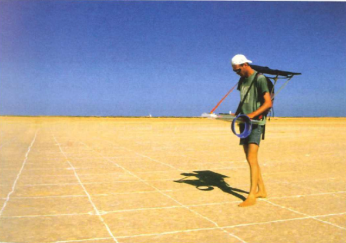
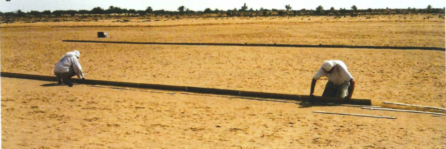

Navigation
Contents
Navigation¶
Responses template if you need it
Animals navigate in many different contexts. At the very least, navigation is a directed behavior in some way. It often requires that animals know where they are, know where they are going, and can compute the difference between the two.
⏳ 10 min
Knowing where you are and where you are going¶
Q1: How would you give someone directions from one of your classrooms to another classroom?
Q2: If you were given a compass-based “heading” starting in this classroom, how would you maintain that heading without the compass while you travelled 1 mile away from the classroom?
Q3: What cues do Loggerhead sea turtles use to tell which direction they are headed in or need to go?
Q4: Can you think of any other cues that animals could use to tell which direction they are headed or need to go?
⏸️ PAUSE here for class-wide discussion
Direction¶
Earth’s Magnetic Field¶
{kind=link}
Fig. 82 The arrows near the Earth’s surface indicate the intensity (lengths of arrows), direction (direction of arrowhead), and angle of inclination (steepness of the arrows in relation to the surface of the Earth) of the magnetic field at a particular site.¶
{kind=link}
Fig. 83 Total intensity (yellow lines) and inclination (red lines) of the Earth’s magnetic field according to the World Magnetic Model (WMM) 2000 (http://geomag.usgs.gov/). The total intensity is shown in 5000 nT steps and the inclination is shown in 10 steps.¶
Case Study: Migratory Birds¶
Many bird species migrate long distances. Even in the absence of visual cues, birds orient toward a specific direction when they take off to migrate. What tools do they use to navigate during migration? How do we investigate what cues they use to migrate?
Minimally, we need to be able to measure direction of migration and to manipulate cues.
To measure migration direction in a controlled environment, Emlen funnels are commonly used. The urge of migrants to move into migratory direction is so strong that even captive birds head into the respective direction in their cages.
{kind=link}
Fig. 84 Inside this funnel-shaped, circular cage, which can either be lined with a recording paper (such as typewriter correction paper or thermal paper) or blank newspaper and an inkpad at the bottom, songbirds will hop. Either method results in marks (scratch marks or ink blotches, respectively) on the paper, which indicate the direction the bird was hopping. During migration, songbirds will tend to hop in the direction in which they would be flying when placed in Emlen funnels during dusk or evening. To test for solely magnetic orientation, visual cues can be blocked by covering the funnel with opaque, white Plexiglas.¶
{kind=link}
Fig. 85 This polar plot graph shows the results of an Emlen funnel experiment. Triangles mark the direction of each scratch and the center arrow is the mean vector of intended travel estimated from the raw data.¶
The earth’s magnetic field is a potential cue that birds could use to obtain consistent direction information across long distances. Manipulating a magnetic field takes a lot of specialized equipment, but is totally do-able.
{kind=link}
Fig. 86 A magnetic cube coil for manipulation of the Earth’s magnetic field. On the table in the center of this coil are several Emlen funnels for testing bird orientation. Each is covered with opaque, translucent Plexiglas, which will block out visual cues but allow some light to enter the funnel. The coil is doubly wrapped with copper wires, which allow two magnetic vectors to be created in order to change the magnetic field so that it can point toward geographic north, east, south, or west depending on which wire(s) electric current is applied to.¶
The inclination compass
As humans, we are most familiar with a “north”/“south” compass. An inclination compass is not sensitive to the direction of the magnetic field, but rather its alignment and sign of inclination. Animals that use an inclanation compass do not distinguish between ‘north’ and ‘south,’ but between ‘equatorwards’ and ‘polewards.’
{kind=link}
Fig. 87 Inclination Compass. The diagram shows a vertical section through the geomagnetic field to illustrate the functional mode of the inclination compass. At different locations on the earth, the magnetic field vector intersects the gravitational vector at different angles and orientations. N, S, magnetic North and South. H, magnetic vector, with He, the vector of the geomagnetic field; Hh, Hv, horizontal and vertical component, respectively; g, gravity vector. » p «, » e « , ‘poleward’ and ‘equatorward’, the readings of the inclination compass. The bird flies ‘poleward’. From Wiltschko and Wiltschko (2005) Magnetic orientation and magnetoreception in birds and other animals.¶
{kind=link}
Fig. 88 Top: Migration direction in each condition. Bottom: diagram of the magnetic field manipulation in each condition.¶
OPTIONAL Q5: How does this experiment demonstrate that birds use the earth’s magnetic field to determine migration direction? What additional manipulation would you need to do to show the same for humans (humans with the aid of our compasses).
It seems that birds have a light-dependent magnetic compass that is mediated by “radical particle” biochemical reactions in specialized magnetoreceptor molecules in the avian retina. Overhead polarized light modulates radical pair-based magnetic compass orientation.1
Birds would be able to ‘see’ the magnetic field lines as a three-dimensional pattern of light irradiance (i.e., brightness) or color variation in their visual field or through a dedicated parallel pathway in the brain.
Ants can also use magnetic field cues, but the biological mechanism of sensory transduction is not known.
{kind=link}
Fig. 89 This experiment demonstrates that ants can use a magnetic field to determine their orientation in space. A) experimental setup in which the magnetic field around an ant can be controlled. B) Two different experimental conditions with the orientation of the magnatic field rotated 90 degrees. C) When ants leave the nest for a foraging trip, they perform “look backs” toward the nest site. Comparing the orange to the blue condition shows that the ants use magnetic field cues to determine the direction of the nest relative to where they are heading.¶
Birds are very social species that often migrate in large flocks. Does migratory direction across generations get learned from parental populations or is it genetically-encoded?
{kind=link}
Fig. 90 A displacement experiment in which blackcap nestlings from two different parental populations were hand-reared and their orientation was later tested at the same site and under identical conditions. The map shows blackcap breeding (stippled) areas with major migration routes shown by arrows (based on tagging recovery experiments). Circular diagrams show individual mean vectors of orientation of hand-raised birds from west (left) and east (right) of the central European migratory divide. Each vector is based on 8–15 active tests using a modified Emlen funnel technique¶
⏳ 5 min
Q6: What does this experiment tell us about the genetic basis of migratory behavior in blackcaps? What experiment would your group decide to follow up with next and why?
Q7: From the perspective of proximate mechanisms, would you consider the magnetic compass bearing of Loggerhead sea turtles as something that is genetically-inherited or learned? What is your evidence from the reading?
⏸️ PAUSE here for class-wide discussion
Light polarization¶
{kind=link}
{kind=link}
Fig. 92 Rhodopsin molecules are sensitive to the polarity of light and are aligned with each other in insect eyes.¶
What do you notice about the location of the sun on the horizon throughout the year? How would this impact the ability of animals to use sunlight polarization cues for global heading?
The Neural Compass¶
The central complex is a brain structure that, across all insects, provides the animal with the ability to keep track of where it is heading. Neurons in the central complex are “tuned to” (“encode”) the heading direction. When an animal changes its heading, a different set of central complex neurons becomes active.
{kind=link}
{kind=link}
Path Integration¶
When an animal goes out foraging for food, it must navigate back to its home after it finds food. What path do animals take and how do they navigate that journey?
{kind=link}
Fig. 95 The foraging journey of an ant is shown on the left. Two potential trajectories back home are given in A and B.¶
⏳ 5 min
Q8: Which path do you think the ant will take home? A or B?
Q9: What information do the animals need to keep track of where they have travelled, and subsequently how to find their way home?
⏸️ PAUSE here for class-wide discussion
So far we have covered a lot of examples for the encoding of heading (direction) in the nervous and genetic systems. Distance is another critical piece of information for many navigation tasks.
Distance (Case Study: Ants)¶
The navigation strategies of Cataglyphis ants have been extensively studied for decades. These ants are thermophiles that thrive in harsh desert environments. Remarkably, they can navigate long distances with few visual landmarks.
Tracking Ants
{kind=link}
A simple displacement experiment shows that ants can tell how far they need to (and have) travelled, regardless of visual cues.
Displacement Experimental Setup
{kind=link}
Fig. 97 After embarking on a foraging run from the home nest (a) to a food site, an ant is displaced to a new location and released (b). Black dots represent the location of the ant at regular time intervals. The graph in (b) shows that the ant does not keep walking once it hits the expected location of the nest (relative to the foraging site) but instead starts searching behavior.¶
So how do they know how far they have gone? Wittlinger, Wehner, and Wolf2 hypothesized that ants were using “pacing” (counting steps) to estimate distance. To test this hypothesis, they manipulated the lengths of ants legs when they displaced ants from the foraging site to the release site.
{kind=link}
Fig. 98 A) Ant legs were either extended or shortened compared to the normal length control. B) The time spent at each location along the return run (search density) was quantified as a readout of where the ants expected the nest to be.¶
Ants (and other insects, expecially flying ones) can also use optic flow cues to estimate distance travelled.
{kind=link}
Fig. 99 A) On the return run (from a found food site back to home), a striped grating was either moved faster than the ant (in the same direction of travel), or moved in the opposite direction of the ant’s travel. B) The distance travelled before searching for the home nest, as a function of the speed of the manipulated visual display.¶
Case Study: Neuroscience - c. elegans searching behavior - navigation along a concentration gradient¶
Research in the nematode worm c. elegans has provided some of the most well-understood proximate explanations for chemotaxis behavior (orienting and moving toward odor sources).
{kind=link}
Fig. 100 Neural basis of chemotaxic behavior in worms.3 A relatively simple neural circuit explains the behavior in which worms navigate toward the location of food. Instead of explicitly “following” an odor concentration gradient, “turning” FAPs are suppressed when odor concentration is increasing.¶
The innate capacity to chemoattract towards food cues was presumably shaped over evolutionary time scales to maximize fitness. This raises the possibility that animals will adhere to basic principles of rational (ie adaptive) decision making. Iwanir et al (2019)4 found that C. elegans worms violate key rational decision-making paradigms. For example, if they preferred odor A over odor B, and odor B over odor C, they would not necessarily prefer odor A over odor C. Behavioral analysis of mutant strains demonstrates that the violations of rational optimal foraging are mediated by specific sensory neurons.
Case Study: Genetics - European Blackcap migration behavior¶
The European blackcap exhibits enormous variation in migration and is renowned for research on its evolution and genetic basis.
Migration is a multi-trait phenotype (ie. syndromes). Different blackcap populations differ in their propensity to migrate as well as the orientation and the distance of migration. Some blackcaps travel rather short distances, others much further, and some populations do not migrate at all. Populations that share the same breeding grounds in the summer may migrate in different directions in the autumn. These features make it a good species to study the genetic variation between populations underlying phenotype differences: for example, comparing those that migrate in different directions and over different distances.5
Delmore et al.6 sequenced the genomes of 110 blackcaps from several populations that take different annual migrations were analyzed. The analysis revealed that only a small set of genes code for their differences in migration and that ** populations began to diverge in their migratory behavior ~30,000 years ago. In particular, genetic differences underlying different migratory behavior tend to be in the parts of the genome that control whether a given gene is switched on or off rather than in the genes themselves.
Additional Resources¶
[Johannes Larsch, Steven W. Flavell, Qiang Liu, Andrew Gordus, Dirk R. Albrecht, Cornelia I. Bargmann. (2015) A Circuit for Gradient Climbing in C. elegans Chemotaxis. Cell Reports; 12(11).]https://doi.org/10.1016/j.celrep.2015.08.032
Phylogeny of locomotor strategies.
Chemotaxis neural network model Abstract: The nematode Caenorhabditis elegans (C. elegans) is a simple multi-cellular organism consisting of around 1,000 cells including 302 neurons, and is the only creature whose connectome has been fully mapped. For these reasons, (C. elegans) is ideal for studying information-processing mechanisms embedded in the neural network. This paper proposes a neural network model of C. elegans with the actual neural structure preserved to simulate the organism’s attraction to sodium chloride (NaCl). To implement attractant behavior, the organism’s neural network must calculate the temporal and spatial gradients of NaCl concentration; however, the mechanism behind this complex information processing in the worm’s neural network has not yet been fully elucidated. As a first step to analyze the information processing mechanism, the parameters of the neural network model were adjusted using the backpropagation through time (BPTT) algorithm, and the neural network model was verified for its ability to generate temporal and spatial gradients. Simulation for neuron ablation experiment was then carried out, and the results exhibited same trends as the biological experiment indicating that our approach can be used to predict the results of biological experiments, and can therefore be used as a tool to provide guidelines for such experiments.)